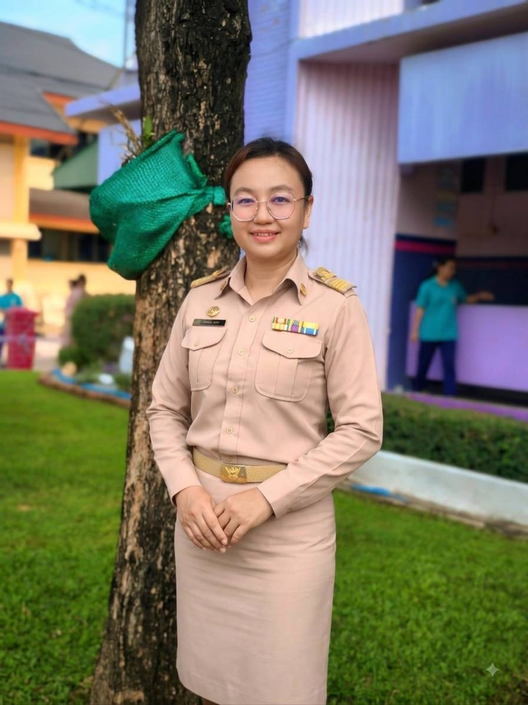
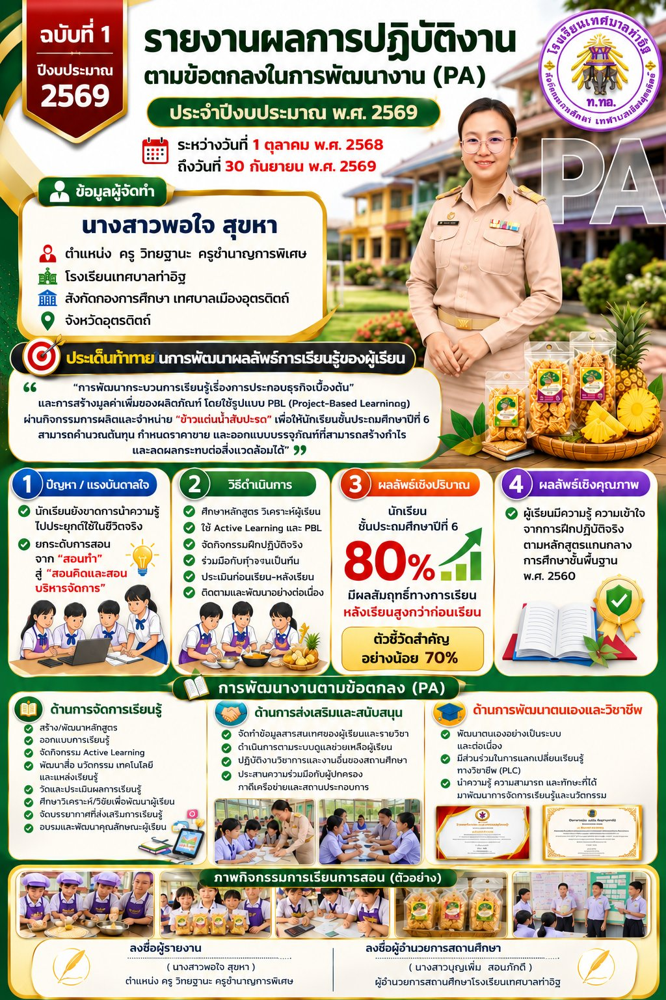
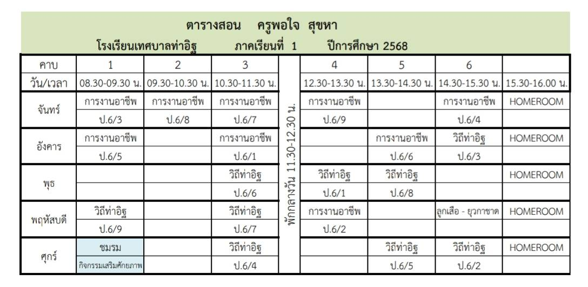
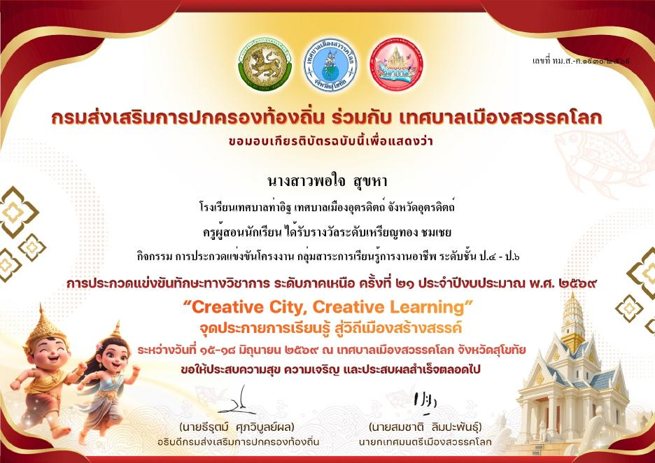
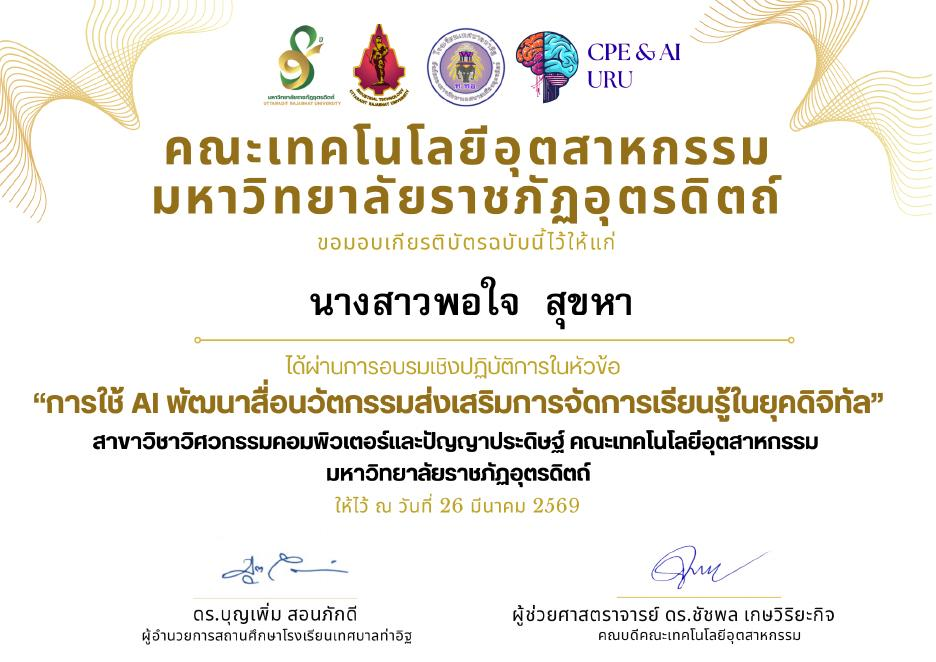
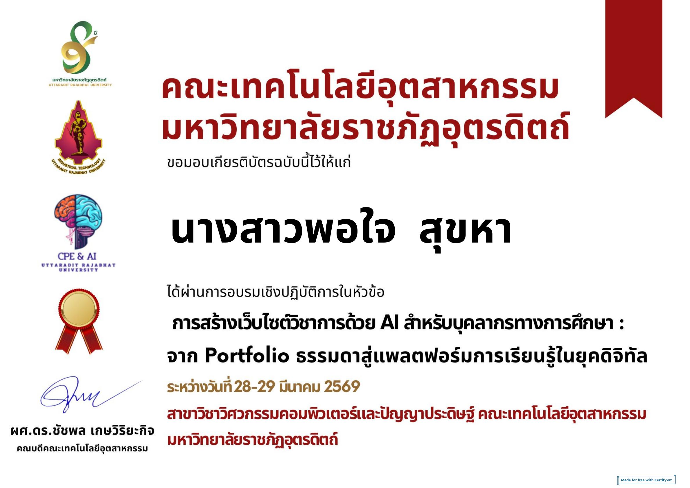

| ชื่อ – นามสกุล | นางสาวพอใจ สุขหา |
|---|---|
| ตำแหน่ง / วิทยฐานะ | ครู / ครูชำนาญการพิเศษ (คศ. 3) |
| สถานศึกษา | โรงเรียนเทศบาลท่าอิฐ |
| สังกัด | กองการศึกษา เทศบาลเมืองอุตรดิตถ์ จังหวัดอุตรดิตถ์ |
| ประเภทห้องเรียน | ห้องเรียนวิชาสามัญหรือวิชาพื้นฐาน |
| วิชาที่สอน | การงานอาชีพ ป.6 · วิถีท่าอิฐ ชีวิตพอเพียง ป.6 · ชมรม · ยุวกาชาด |
| ผู้อำนวยการสถานศึกษา | นางสาวบุญเพิ่ม สอนภักดี |

เป็นไปตามที่ ก.จ. ก.ท. และ ก.อบต. กำหนด (ภาคเรียนที่ 2/2568 และภาคเรียนที่ 1/2569)
| 1.1 ชั่วโมงการสอน (ต่อภาคเรียน) | |
| การงานอาชีพ ป.6 | 9 ชม./สัปดาห์ |
| วิถีท่าอิฐ ชีวิตพอเพียง ป.6 | 9 ชม./สัปดาห์ |
| ชมรม ป.6 | 1 ชม./สัปดาห์ |
| กิจกรรมยุวกาชาด ป.6 | 1 ชม./สัปดาห์ |
| 1.2 งานส่งเสริมและสนับสนุนการจัดการเรียนรู้ | |
| จัดทำแผนการจัดการเรียนรู้ | 2 ชม./สัปดาห์ |
| วัดและประเมินผลการเรียนรู้ | 2 ชม./สัปดาห์ |
| สร้างและพัฒนาสื่อการสอน | 2 ชม./สัปดาห์ |
| ทำวิจัยเพื่อพัฒนาผู้เรียน | 2 ชม./สัปดาห์ |
| คณะกรรมการปรับปรุงและพัฒนาสาระหลักสูตร | 2 ชม./สัปดาห์ |
| ตรวจการบ้าน/ชิ้นงานนักเรียน | 2 ชม./สัปดาห์ |
| ครูประจำชั้น (ระบบดูแลช่วยเหลือ/เยี่ยมบ้าน/โฮมรูม) | 5 ชม./สัปดาห์ |
| กรรมการนำนักเรียนไปทัศนศึกษา | 6 ชม./ภาคเรียน |
| กรรมการกิจกรรมเดินทางไกลลูกเสือ–ยุวกาชาด | 6 ชม./ภาคเรียน |
| นำนักเรียนแข่งขันทักษะวิชาการภายนอก | 6 ชม./ภาคเรียน |
| 1.3 งานพัฒนาคุณภาพการจัดการศึกษาของสถานศึกษา | |
| ผู้รับผิดชอบโครงการบริหารจัดการขยะมูลฝอย (ห้องเรียนสวยงาม สะอาด บรรยากาศเป็นใจ ไฉไลด้วยความรู้) | 2 ชม./สัปดาห์ |
| ครูเวรธนาคารขยะ วันจันทร์ | 2 ชม./สัปดาห์ |
| ครูประจำศูนย์การเรียนรู้ตามหลักปรัชญาเศรษฐกิจพอเพียง (ฐานศาสตร์พระราชาสู่การพัฒนาที่ยั่งยืน) | 6 ชม./สัปดาห์ |
| ชุมชนการเรียนรู้ทางวิชาชีพ (PLC) | 50 ชม./ปี |
| 1.4 งานตอบสนองนโยบายและจุดเน้น | |
| กิจกรรม Open House 2025 | 7 ชม./ปีการศึกษา |
| พิธีเข้าประจำหมู่ยุวกาชาด | 1 ชม./ปีการศึกษา |
| เดินทางไกลลูกเสือ ยุวกาชาด ป.6 | 6 ชม./ปีการศึกษา |
| ค่ายวิชาการ | 6 ชม./ปีการศึกษา |
| การอบรม / ประชุมเชิงปฏิบัติการ / สัมมนา | |
| กลยุทธ์การจัดการเรียนรู้ต่อยอด Active Learning สู่ Student Outcomes ว PA (อักษรเจริญทัศน์) | 6 ชม. |
| หลักสูตรส่งเสริมการเรียนรู้หน้าที่พลเมืองดิจิทัล “อุ่นใจไซเบอร์” (Advanced Level) | 20 ชม. |
| การใช้ AI พัฒนาสื่อนวัตกรรมส่งเสริมการจัดการเรียนรู้ในยุคดิจิทัล (มรภ.อุตรดิตถ์) | 26 มี.ค. 69 |
| การสร้างเว็บไซต์วิชาการด้วย AI สำหรับบุคลากรทางการศึกษา (มรภ.อุตรดิตถ์) | 28–29 มี.ค. 69 |

ระดับการปฏิบัติที่คาดหวังของวิทยฐานะชำนาญการพิเศษ: ริเริ่ม พัฒนา (Originate & Improve) · กดที่หัวข้อเพื่อดูงาน ผลลัพธ์ และตัวชี้วัด
“การพัฒนากระบวนการเรียนรู้เรื่องการประกอบธุรกิจเบื้องต้นและการสร้างมูลค่าเพิ่มของผลิตภัณฑ์ โดยใช้รูปแบบ PBL (Project-Based Learning) ผ่านกิจกรรมการผลิตและจำหน่าย ‘ข้าวแต๋นน้ำสับปะรด’ เพื่อให้นักเรียนชั้นประถมศึกษาปีที่ 6 สามารถคำนวณต้นทุน กำหนดราคาขาย และออกแบบบรรจุภัณฑ์ที่สามารถสร้างกำไรและลดผลกระทบต่อสิ่งแวดล้อมได้”
นักเรียนส่วนใหญ่ยังขาดการนำความรู้ไปประยุกต์ใช้ในชีวิตจริง ประเด็นท้าทายนี้จึงยกระดับการสอนจากการ “สอนทำ” ไปสู่ “สอนคิดและสอนบริหารจัดการ” โดยใช้ข้าวแต๋นน้ำสับปะรดเป็นเครื่องมือให้ผู้เรียนใช้ทักษะการงานอาชีพแก้ปัญหาและปฏิบัติงานจริงแบบ PBL ปิดช่องว่างด้านทักษะธุรกิจ การคำนวณ และการสร้างสรรค์ที่เป็นมิตรต่อสิ่งแวดล้อม ซึ่งเป็นทักษะจำเป็นในศตวรรษที่ 21
ของนักเรียน ป.6 มีผลสัมฤทธิ์ทางการเรียนหลังเรียนสูงกว่าก่อนเรียน
นักเรียน ป.6 มีความรู้ความเข้าใจจากกระบวนการฝึกปฏิบัติจริง ตามหลักสูตรแกนกลางการศึกษาขั้นพื้นฐาน (ฉบับปรับปรุง 2560)
หลักสูตรที่พัฒนาให้สอดคล้องกับบริบทของโรงเรียนเทศบาลท่าอิฐ ชุมชน และหลักปรัชญาของเศรษฐกิจพอเพียง
เรียนรู้การเกษตรทฤษฎีใหม่เพื่อสร้างรากฐานความพอเพียงในครัวเรือนและโรงเรียน ถอดบทเรียนการพึ่งพาตนเองจากภูมิปัญญาท้องถิ่น และสำรวจความถนัดของตนเอง (5 ผลการเรียนรู้)
ดาวน์โหลดหลักสูตร ป.5วิเคราะห์ความเปลี่ยนแปลงทางเศรษฐกิจและสังคมที่มีผลต่อวิถีชาวท่าอิฐ ประยุกต์หลัก 3 ห่วง 2 เงื่อนไข สำรวจอาชีพในชุมชน และวางแผนนำเสนอ “อาชีพในฝัน” (5 ผลการเรียนรู้)
ดาวน์โหลดหลักสูตร ป.6หลักสูตรกลุ่มสาระการเรียนรู้การงานอาชีพ ฉบับปรับปรุง v.1 ตามแนวทางตัวชี้วัดระหว่างทางและตัวชี้วัดปลายทาง พร้อมเกณฑ์การตัดสินผลการเรียน
ดาวน์โหลดรวมเล่มสแกน QR Code หรือกดปุ่มเพื่อเปิดแผนการสอนแต่ละหน่วย
สื่อวิดีโอที่ครูสร้างและพัฒนาขึ้นเพื่อใช้ประกอบการจัดการเรียนรู้
หลักฐานการพัฒนาตนเองและผลงานของผู้เรียน

การประกวดแข่งขันโครงงาน กลุ่มสาระการงานอาชีพ ป.4–ป.6 งานศิลปหัตถกรรมนักเรียน ท้องถิ่นระดับภาค ครั้งที่ 21 (2569)
เปิด PDF
คณะเทคโนโลยีอุตสาหกรรม มหาวิทยาลัยราชภัฏอุตรดิตถ์ · 26 มีนาคม 2569
เปิด PDF
จาก Portfolio ธรรมดาสู่แพลตฟอร์มการเรียนรู้ในยุคดิจิทัล · มรภ.อุตรดิตถ์ · 28–29 มีนาคม 2569
เปิด PDFประเมินโดยคณะกรรมการ 3 คน · เกณฑ์ผ่านต้องได้คะแนนจากกรรมการแต่ละคนไม่ต่ำกว่าร้อยละ 70
ข้อตกลงในการพัฒนางานตามมาตรฐานตำแหน่ง (ด้านการจัดการเรียนรู้ · การส่งเสริมสนับสนุน · การพัฒนาตนเองและวิชาชีพ)
ประเด็นท้าทาย: วิธีดำเนินการ 20 คะแนน · ผลลัพธ์การเรียนรู้ที่คาดหวัง 20 คะแนน (เชิงปริมาณ 10 · เชิงคุณภาพ 10)
คะแนนเต็ม 100 · ผ่านเกณฑ์เมื่อได้ ≥ 70 คะแนนจากกรรมการทุกคน · ระดับการประเมิน 1–4 (ต่ำกว่าระดับที่คาดหวังมาก → สูงกว่าระดับที่คาดหวัง)